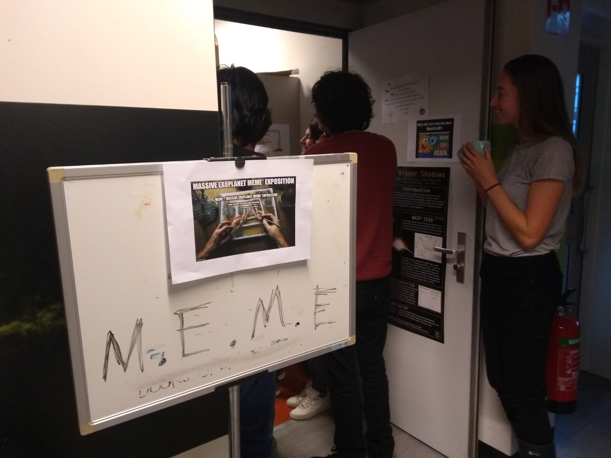

Exploring Exoplanets
Exploring Exoplanets is an art exhibition based on the scientific results of the CHAMELEON network.

"Science is not the absence of imagination, but its embrace"
The Massive Exoplanet MEME exhibition combines the decade old art of memes with all the struggles of astrophysics students, scientists and professors. Every year in January we gather in an online exhibition where we share the memes we gathered through out the year. You can find more information on the official MEME webpage.
The idea for the MEME was born in early 2020, when 4 students, after a long day of studying, decided that it is time to relax. Since all 4 loved to create memes, they decided to ask all the other students for their best and worst memes. All memes were printed and taped to the walls of a small office. Of course, a successful exhibition needs visitors, so a quick round mail to the whole department made sure that everyone knew what was going on. With over 50 visitors, and a small guest speech from Jonathon Fortney, the first installment of the MEME was considered a full success. Since its first installment, the MEME was steadily improved and upgraded. Now the MEME is fully online allowing people to join from all over the world.

Since our second installment, the MEME is not just a place for renowned scientists and astrophysics students dreaming to become one, but also for high school students as a place to learn and enjoy astrophysics from a different angle. We prepare a second, smaller venue were the students are guided by astrophysics PhDs. They learn about current research but also about student life, research life and coding. The memes in this smaller venue are specific selected to be more understandable and relatable. If you are a teacher or student at a high school and would be interested in one of our tours, get in touch with us!. We are offering the tour in multiple languages.
We are always happy to welcome new memers to our team. So if you are interested in memes and the MEME do not hesitate to contact me!
Exploring Exoplanets is an art exhibition based on the scientific results of the CHAMELEON network.
SEADS (Space Ecologies Art and Design) is a transdisciplinary and cross-cultural collective of artists, scientists, engineers and activists.
A group of interdisciplinary projects with the goal to tackle future problems already today.
ARIS is the rocket team of ETH Zuerich. In 2019, I was the payload team leader and together we won 2nd place.
A game development team that started from a high school project. Several groups worked on the design, coding and screen play.
A week on Diavolezza at 3000m trying to observe stellar clusters during a snow storm.
The SYPT is a annual competition where high school students have to prepare, conduct and present a physics experiment.
A collaboration between writers and exoplanet scientists to create short stories, poems and radio plays based on contemporary research.
Writing stories and bringing them to life has always been a fascination of mine. With Dungeons and Dragons I have a way to live it.